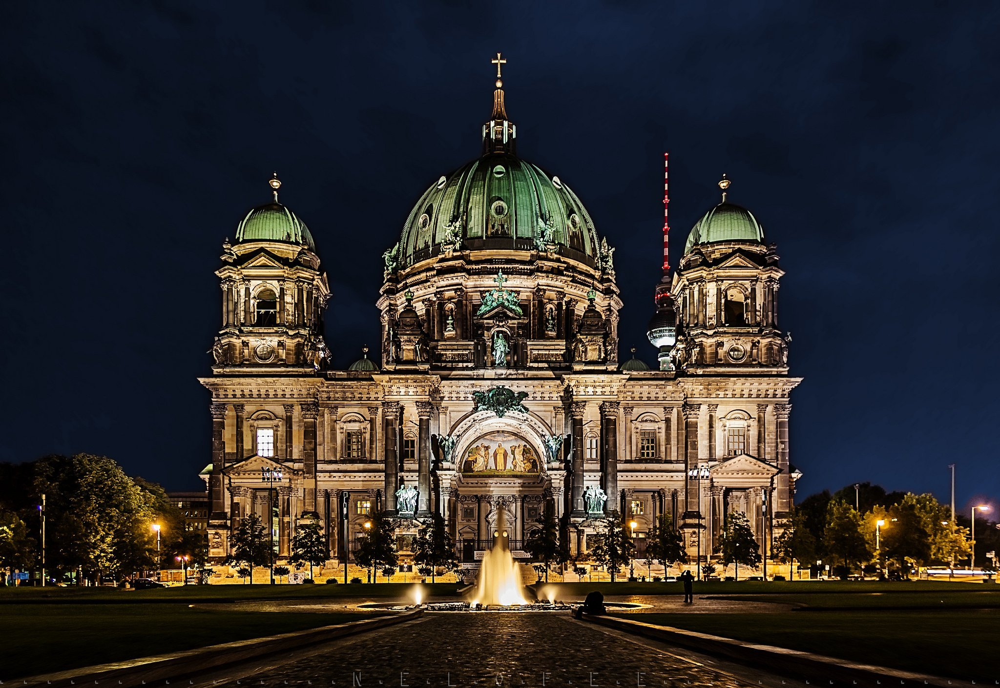
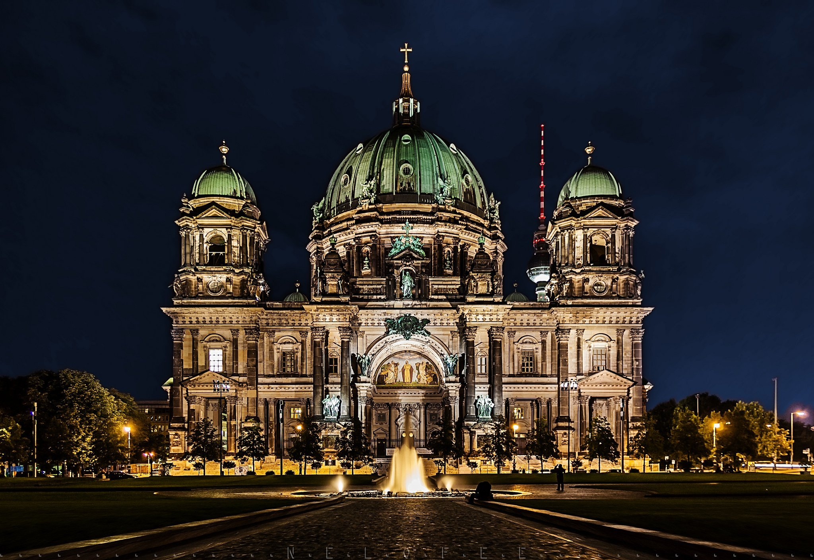

Германия
Карта Германии
Герма́ния — государство в Центральной Европе, столица — Берлин. Площадь территории — 357 592 км². Численность населения на январь 2023 года — 84,4 млн человек. Занимает 19-е место в мире по численности населения и 62-е в мире по территории (8-е в Европе).Расположенная в центре Европы Германия омывается водами Балтийского и Северного морей. Граничит с Данией на севере, Польшей и Чехией на востоке, Австрией и Швейцарией на юге, Францией, Люксембургом, Бельгией и Нидерландами на западе.
Столица
Берли́н — столица и крупнейший город Германии, первый по населению и второй по площади город Евросоюза. Является одной из 16 земель в составе ФРГ и целиком располагается внутри федеральной земли Бранденбург. Город расположен на берегах рек:.
Гимн Германии
Админинистративно-территориальное деление
|
№ |
Название |
Тип адм. ед. |
Столица |
Население, |
Площадь, |
|---|---|---|---|---|---|
|
1 |
территория |
357 219 |
2358 |
||
|
2 |
штат |
5 354 040 |
227 416 |
||
|
3 |
штат |
2 239 170 |
2 529 875 |
||
|
4 |
штат |
4 332 737 |
1 730 648 |
||
|
5 |
штат |
6 917 658 |
800 642 |
||
|
6 |
территория |
211 944 |
1 349 129 |
||
|
7 |
штат |
495 350 |
68 401 |
||
|
8 |
штат |
1 596 570 |
983 482 |
.svg.png) 
